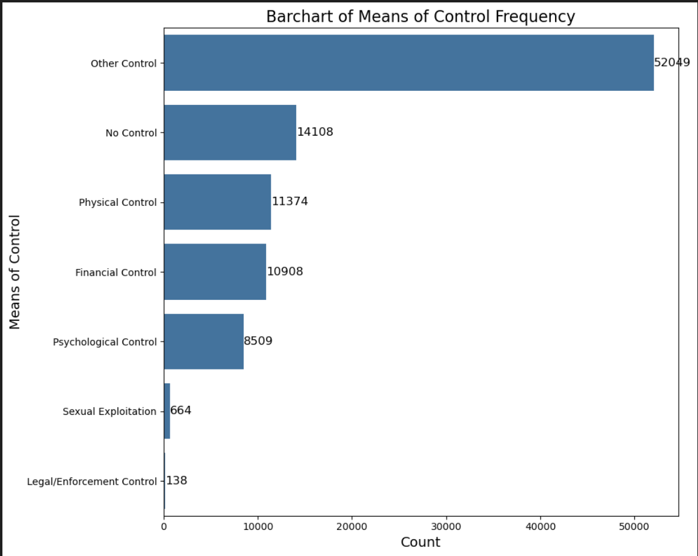
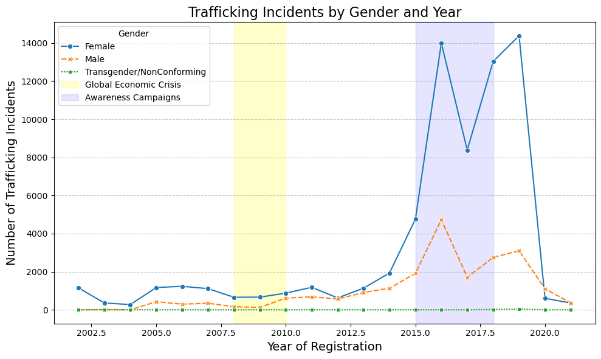
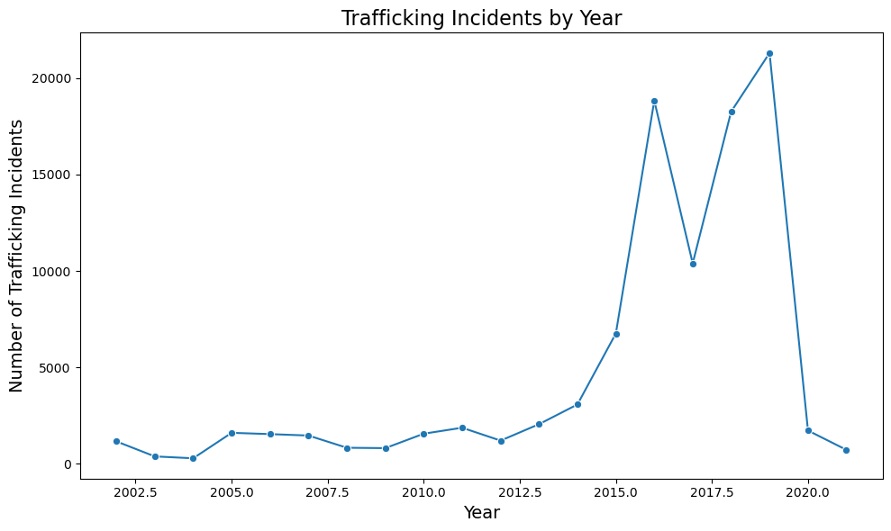
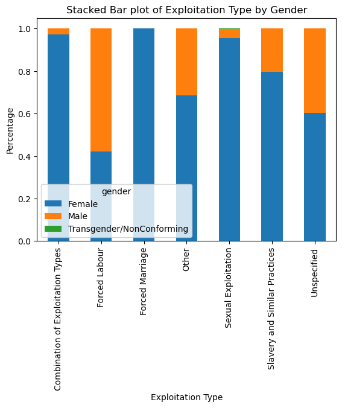
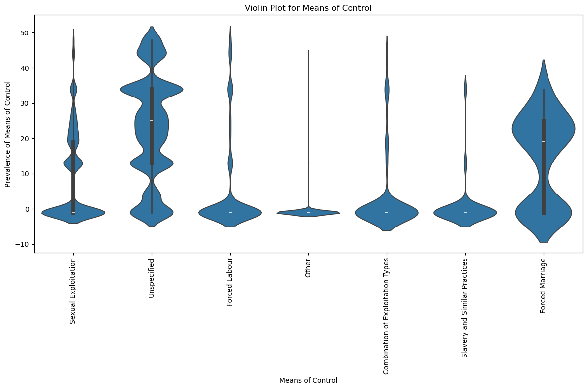

Means of Control Frequency: Count vs. Means of Control
Exploitation Type Percentages: Type vs. Percentage

Trafficking Incidents: Years vs. # of Incidents w/ Global Economic Crises and Awareness Campaigns

Trafficking Incidents: Years vs. # of Incidents

Exploitation Type by Gender: Exploitation Type vs. Percentage

Means of Control Violin Plot: Means of Control vs. Percentages
Interactive Map: Clickable Country Data
Trafficking Incidents by Gender and Year
Interactive Stacked Bar Chart with Gender Breakdown
Interactive Violin Plot - test